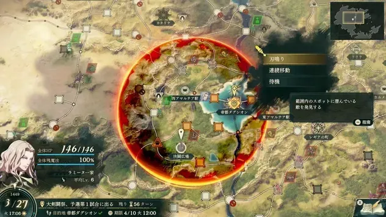
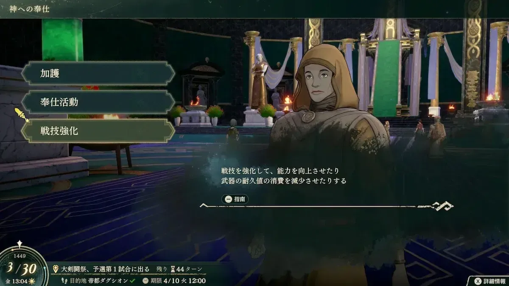
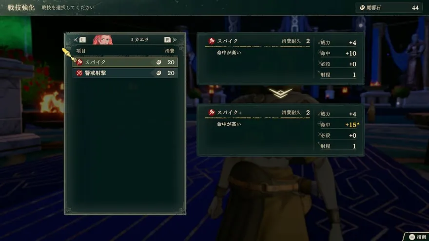

刃鸣找敌，魔响石强化战技
第 4 章，自由探索开放后，你可以主动找出地图上的敌人。遭遇战既能练同伴，也能攒强化材料；再回神殿，把常用战技的命中、威力或耐久消耗改善一点。

查看大图 ↗圈出附近遭遇战，抓住两回合窗口
选择「刃鸣」，附近地点就可能出现遭遇战。先看范围里有哪些格子、走过去要多久，再决定要追哪一场。
出现后 2 个自由行动回合就会消失连续使用会缩小范围；经过回合，或出入据点、地宫后可恢复。不要为了追远处的敌人白跑。
日文版画面 · Game8 原图与说明 ↗- 找敌刃鸣圈出遭遇战
- 交锋练队伍，收集魔响石
- 磨技斯米尔诺斯神殿强化
战技强化：给常用招式追加性能
花费魔响石，强化某位角色已经会用的战技。不同招式的改善项不同：可能提高威力、命中或必杀，也可能降低武器耐久消耗。先看强化前后对比，再决定这一笔材料花给谁。
- 1
材料在哪：刃鸣遭遇战
自由行动时在世界地图发动刃鸣，赶到出现敌人的地点并取胜，可取得魔响石。优先顺着委托路线打近处敌人；有余裕再在据点或地宫附近反复找战斗，出入后恢复索敌范围。
敌人出现后两回合消失。按剩余行动与队伍状态安排，不要为了攒石头错过任务期限。
- 2
去哪强化：帝都上层的神殿
和接待人员对话，选择「战技强化」。日文资料中的地点为「スミルノス神殿」，接待处为「参殿者受付」，方便对照下方画面。
- 3
怎么操作：先选人，再选战技
进入强化菜单 → 选要培养的角色 → 选可强化战技 → 核对所需魔响石与前后变化 → 确认强化。费用以选中战技的菜单为准，不是所有招式统一价格。
同名战技要逐人强化。一位角色强化后，其他人不会自动获得同样收益。武器自带的固有战技不能按这套方式强化。

查看大图 ↗第一批材料，先花在什么地方？
常用却容易打空：优先看命中改善。强力但太耗武器：优先看耐久消耗降低。就差一点能击杀：再看威力提升。先集中在你真正出战的角色，不必把每个人的每一招都强化。
下图就是 米迦艾拉 的例子：命中加成从 +10 提高到 +15，耐久消耗保持 2。强化后的收益可直接在菜单里核对。

查看大图 ↗同一招，更容易命中
图中 米迦艾拉 的斧战技，强化前后对比很直观：
优先改善主力常用招式的短板。同名战技需要逐人强化，不是强化一次全队共享；先选角色，再确认收益。
日文版画面 · Game8 画面来源 ↗剑、黑魔法与前排：先练好身边这五人
按本篇出现顺序认识队伍。箭头表示可选培养方向；考试条件满足时可调整，不要求逐个职业全部练满。
迪托利希
剑术主攻先手必杀加成适合主动找击杀。让他处理能稳定拿下的敌人，不要把必杀当作生存保证。
培养重点
剑术优先；进中级前先冲剑术 C。换武器时同时比较命中和攻速，不只看面板威力。
留意 敌方回合能否站住要另算；进攻能力强，不等于能独自吃下整群敌人的攻击。
第三部再规划的转职
第三部：刀剑将领，剑术 A；还需完成战神的委托解锁。
法比奥
黑魔法主攻专门处理剑砍不动的物理前排。前期能帮忙回复，长期投入仍以黑魔术为主。
培养重点
黑魔术向 C+ 推进，保证转萨满巫师；杨界接手日常治疗后，把更多回合留给魔法输出。
留意 站在前排身后，避免为了邻接效果深入敌阵。魔力成长好，不代表能承受物理围攻。
第三部再规划的转职
第三部：德鲁伊，黑魔术 A。
艾丝梅拉尔达
物理承伤已有的前排值得先养。她能接住物理压力，让迪托利希和法比奥安心选目标。
培养重点
枪或斧选一项主练，并补重装。重装步兵目标：主武器 C、重装 E+；投枪用于扩大接敌选择。
留意 碰到法师先看伤害预览；歌利亚也偏物理承伤，不必只为堆坦克同时重投两人。
第三部再规划的转职
第三部：要塞，重装 C，另需枪术 A 或斧术 A。
杨界
低成本治疗本线教学加入，省下另招治疗者的支援与交涉准备。先把现成的回复位置用起来。
培养重点
白魔术优先，先沿牧师 → 主教方向培养；考试技能、票证和通过率以当前存档界面为准。学会远程治疗后，从安全位置覆盖前排。
留意 不要套用其他路线的交涉问答；本线按教学流程加入。回复位先保证存活，不必追求抢击杀。
第三部再规划的转职
第三部：贤者，白魔术 A。
兵种采用原手册已有的简体中文译名。中级、上级还受进度与考试资格限制；第三部目标单独折叠，不提前当作第一部成型要求。
越早入队，越多成长由你安排
想长期培养的人，尽量在出现且条件达标后招进来。多出来的自由行动时间，可以用来练技能、换合适的兵种，也能让新同伴参加刃鸣遭遇战。
提前选兵种，自己练技能
低名声门槛意味着更早着手的机会；若实际入队等级也低，后续由你安排的升级次数就更多。
等级上涨，技能未必跟得上
不能指望晚招的高等级角色，自动拥有同样充分的技能、精通和兵种成长。
玩家对比发现，未招募角色的高等级面板可能低于自行培养结果。但低名声不直接等于低入队等级，也不能据此算出固定的最终上限；还要看出现章节、实际招募时点和随机成长。本站不采用尚未证实的统一成长折扣公式。
从名声 3 开始，安排下一位同伴
招募门槛按名声从低到高排列。同门槛不代表同一章能加入，人物卡另列首次出现时点和交涉要求。
本线招募金字塔
每层列出从这一名声门槛开始可考虑的人物。升到更高名声后，低门槛人物仍可招募；还要满足支援、出现时间及交涉要求。
名声 3
1 位名声 4
1 位名声 5
2 位名声 6
5 位名声 7
6 位名声 8
11 位名声 9
9 位名声 10
4 位层级宽度只区分名声门槛，不表示战力或人数。★ 是本站按加入成本、培养时间及队伍缺口给出的建议，点击人物查看理由和完整条件。
名声 3—5 四位低门槛候选
伊欧
最早准备的骑兵名声 3 · 支援 2
支付 800G
本线名声门槛最低，800G 就能完成交涉。需要跑位、收尾和支援侧翼时，先考虑他。
培养重点
先练枪术与马术，沿轻骑兵 → 荣光骑士准备；考试技能、票证和通过率以当前存档界面为准。骑乘先手能发挥个人能力。
留意 防御收益有骑兵、先手条件，别当成敌方回合常驻护甲；第 4 章出现不等于当场已达门槛。
第三部再规划的转职
第三部：奥利哈铁骑，马术 B，另需枪术 A 或剑术 A。
基罗伊卡
弓系收尾／可选开锁补位名声 4 · 支援 1
交付圣水 ×3
弓术擅长、速度与技巧较高；暴虐仅对异常状态敌人提供攻击+3、必杀+10。先看实际伤害与命中，不把异常或必杀当击杀保证。
培养重点
先专注弓术；需要探索可改恶棍，完成本线「必滅のオウコ」挑战后可转游侠。缺机动时才补马术转森林骑士。
留意 魔防偏低，回合结束前检查法术与近战覆盖；Lv35的概率技能不作必杀保证。
第三部再规划的转职
第三部可选探影者（弓／剑A）；已练马术时可考虑弓骑士（弓A＋马D，另需完成对应神殿委托）。
乌尔坦德
伴随前排的回复名声 5 · 支援 3
完成乌尔坦德的请求：接取后到北部堡垒找赠礼盒，带回交付
邻接队友战后回复，适合常常扎堆推进的队伍。缺前排支援时考虑，已有杨界则先比较职能。
培养重点
白魔术与枪术分阶段投入：缺治疗先保白魔术，准备卫士时再集中枪术。
留意 不会远程治疗术，不能替代远程救急位。名声达标后，还要先接请求、取回赠礼盒并交差。
第三部再规划的转职
第三部：圣枪师，枪术 A。
努蒂奴
能穿过敌阵的机动位名声 5 · 支援 2
交付青铜斧 ×2
骑乘时可以穿过敌人所在格，绕到侧翼或接近目标更灵活。名声 5 就值得提前备好两把斧。
培养重点
斧术和马术为主；土匪阶段偏重物理输出，再按考试要求补骑兵技能。想留魔法骑兵方向，后续兼修黑魔术。
留意 穿越能力要求骑兵，且自身不能是大型单位；土匪过渡期不享受这一骑乘能力。
第三部再规划的转职
第三部可再规划魔法骑兵；本篇先保证斧术、马术，避免过早同时练太多方向。
名声 6 机动、回复与物理补强
诺克裘拉
低支援成本的格斗手名声 6 · 支援 1
来源列出支援与名声；未展开附加交涉，不能据此认定无条件
支援只要 1，力量、速度和守备较均衡。想补近战格斗时，比再培养一名剑手更有分工。
培养重点
主练格斗，按当前考试界面经斗拳手、勇士推进；斧已练成时也可经土匪转勇士，不必两条都练。斗拳手精通的「攻击&远离」只在使用战技的战斗中提供回避+10。
留意 个人回避+3在战斗后才生效；Lv.35的额外回避也只是概率触发，不能用来保证存活。魔防偏弱，仍需避开法术集火。已有米迦艾拉时，按格斗或斧的缺口决定是否追加投入。附加交涉尚待核对。
第三部再规划的转职
第三部物理单修可考虑战斗将领；想补护手回避再准备武僧，需要额外白魔术训练和奥罗拉委托。武僧的回避+7只在装备护手时生效。
莱桑达
第二个骑乘候选名声 6 · 支援 3
交付铁枪 ×5
适合缺机动枪位的队伍；先手回避收益帮助主动进攻。已练伊欧时，不必为了相同职责再重练一位。
培养重点
枪术与马术优先。骑甲驼兵准备枪术 C、马术 D，再向上级骑兵发展。
留意 铁枪需要 5 把；先比较现有骑兵的完成度和存款，再决定是否补招。
第三部再规划的转职
第三部：奥利哈铁骑，马术 B，另需枪术 A 或剑术 A。
奥林匹亚
专职白魔法名声 6 · 支援 3
请求1：暁平原探索 → 请求2：バイナのオアシス市场购买 → 请求3：碧晶洞穴探索；每段交付后再接下一段
需要加强回复时的中期候选。先完成三段请求，入队后把白魔术训练和安全站位放在输出之前。
培养重点
优先白魔术，先过牧师，再向主教发展。杨界够用时可缓招，把回合留给其他缺口。
留意 地点组合仅用于迪托利希线。先接任务再取物；市场购入物按当前标价备钱，出发前核对任务期限。完整日文物品名见本线档案。
第三部再规划的转职
第三部：贤者，白魔术 A。
歌利亚
物理防线补强名声 6 · 支援 3
交付巨人肉 ×3
力量、体力和守备是长项，缺守口角色时很好用。已有艾丝梅拉尔达，先决定是否真的需要第二个重装。
培养重点
重装配枪或斧的一项主武器；给他安排窄口和物理敌人，让治疗者留在身后。
留意 魔防偏低，且不能转骑兵、飞行；不要把全部机动任务交给他。交涉必须交巨人肉，不是空对话。
第三部再规划的转职
第三部：要塞；重装 C，另需枪术 A 或斧术 A。
杰斯特
高速剑弓候选名声 6 · 支援 3
完成三场请求战斗；每场结束回报后，才可接取下一场
速度成长突出，适合追击、换位和收尾。喜欢灵活走位，可以把三场招募任务一起纳入培养日程。
培养重点
先选剑或弓为主武器。恶棍提供开锁方向，侍道偏剑术；不要为了远期目标同时摊薄训练。
留意 力量不是长项，留意实际伤害；与迪托利希的近战职责重叠，缺远程时再考虑偏弓。
第三部再规划的转职
第三部：探影者，剑术 A 或弓术 A。
本线完整招募条件 · 39 位，按名声升序 ＋
不含上方五位本线同伴。S＝支援等级，R＝名声等级。高门槛条目沿用已收录资料，未展开的交涉仍待核对；没有写明不表示无附加条件。
第9—11章 · 8篇外传日历
只列本篇能接的外传，按首次开放日期排列。日期均为游戏内1449年；接取窗口结束后，即使完成期限未到，也可能接不到任务。
每篇基本奖励均含 20,000G ＋ 名声150，另有下列道具。完成外传只满足部分招募条件，不会自动招来相关人物。第三部的条件加入另行标注。
短窗口提醒 · 贝特朗外传 仅9月17日可接，推进当天前先去大斗技场。
阳动作战
可接取9/2—9/8
完成期限来源未单列
去哪里接 帝都 · 卡拉神殿前
完成后还要等蕾达队败退，才能推进巴卡尼亚的招募；仍需满足支援、名声及交涉。
打法、接取提醒与资料来源
向神殿前的委托人接取。
- 障碍物被攻击破坏时，邻接障碍也会连锁消失；敌方攻击同样能触发。推进前检查后排是否会因此直接暴露。
- 战力不足时可先稳守等待友军增援；增援到达时蕾达会离场，不要继续把她计入之后的站位与输出。
来源未单列完成期限的条目，不推定它等于接取末日。接到后查看游戏任务栏，并尽早完成。
窗口按腾讯共创表核对；完成期限由单篇攻略补充。标题为本站中文整理，便于识别任务人物。
勇士像的下落
可接取9/3—9/8
完成期限来源未单列
去哪里接 帝都 · 下参道附近
仅迪托利希篇可接。想收集这段人物故事，应在第9章前半段处理。
打法、接取提醒与资料来源
向下参道附近的委托人接取。
- 胜利目标是踩上并启动3处机关：地图下方2处、上方1处。开局先查看目标位置，不必把歼灭全场当成胜利条件。
- 地图有雾，前排成组探路，确认安全后再让后排跟上；别为分头踩机关，让治疗或远程单位单独暴露。
来源未单列完成期限的条目，不推定它等于接取末日。接到后查看游戏任务栏，并尽早完成。
窗口按腾讯共创表核对；完成期限由单篇攻略补充。标题为本站中文整理，便于识别任务人物。
亲善比赛
可接取9/17（仅当天）
完成期限来源未单列
去哪里接 帝都 · 大斗技场前
关系到佩佩，以及迪托利希篇盖茨的招募；盖茨还要等待贝特朗队败退。第三部第一区分的贝特朗加入也要求完成此外传。
打法、接取提醒与资料来源
向大斗技场前的委托人接取。
- 目标是比对手先击倒4名巨人。优先争取巨人的最后一击，可用机动单位接近被对手削弱的巨人，别把主力都耗在追打对方部队。
- 巨人的饲料会暂时令目标无敌，并停止攻击投喂方，持续到下次己方阶段开始。先完成本回合输出，收尾时再用饲料保护暂时杀不掉的巨人，防止对手抢走击杀。
- 贝特朗使用觉醒后仍可继续行动，增益持续到下次己方阶段开始。利用防御／回避增益及耐物阵、回复阵维持前线，再集中输出巨人。
来源未单列完成期限的条目，不推定它等于接取末日。接到后查看游戏任务栏，并尽早完成。
窗口按腾讯共创表核对；完成期限由单篇攻略补充。标题为本站中文整理，便于识别任务人物。
消失的马车
可接取9/17—9/19
完成期限10/12
可接取10/1—10/10
完成期限10/12
去哪里接 帝都 · 港口
关系到乌修拉的招募；交涉仍有选项要求。第三部第一区分的塔利穆恩加入也要求完成此外传。
打法、接取提醒与资料来源
向港口的塔利穆恩接取；两段日期是同一外传的两个接取窗口，不用重复完成。
- 携带货物的盗贼到达撤离目标点就会失败。优先封住逃跑路线；货物被拿走不等于立即失败，击败持有者后仍可取回。
- 胜利条件是回收全部货物，或击败全部敌人。守住退路后，再按战况选择回收或歼敌，不必为了捡货物贸然拆散防线。
- 盗贼与鸟类敌人会互相攻击，可以利用双方交战造成的削血；出战前准备弓或对飞行有效的战技，仍以阻止盗贼逃脱为优先。
窗口按腾讯共创表核对；完成期限由单篇攻略补充。标题为本站中文整理，便于识别任务人物。
金黄色的秘密
可接取9/29—10/5
完成期限来源未单列
去哪里接 帝都 · 达古扎神殿前
打法、接取提醒与资料来源
向神殿前的安娜接取。
- 客串单位索雷尔（ソレル）牵制巨人，其余人清理沿途敌人并拆矿，不把全队挤在巨人面前。
- 地图共10堆矿，每破坏5堆会触发一次对巨人的大额伤害，最多两次。优先安排机动单位拆矿；安娜的「重突進」可以边移动边破坏。
来源未单列完成期限的条目，不推定它等于接取末日。接到后查看游戏任务栏，并尽早完成。
窗口按腾讯共创表核对；完成期限由单篇攻略补充。标题为本站中文整理，便于识别任务人物。
被抹去之民的女王
可接取10/5—10/14
完成期限10/17
去哪里接 帝都 · 市街东北侧
关系到莎兰的招募与第三部第二区分的阿纳托莉娅加入。护送平民的脱离人数还影响追加报酬，尽量全员救出。
打法、接取提醒与资料来源
向市街的阿纳托莉娅接取，之后前往白鸦台；预留帝都外的移动时间。
- 护送仍可行动的平民到地图北端的2格出口，再让阿纳托莉娅最后撤离；有3名平民被击倒就会失败。尽量全员救出，额外报酬会随脱离人数变化。
- 击倒红色特殊敌人（ディガンマ）可让中央首领停止行动1回合。护送队接近首领时，尽量逐回合安排击杀，别在同一回合把可用的红色目标一次清光。
- 平民被首领范围攻击打到后会陷入错乱、停止跟随。让附近任一友军贴邻，使用「呼びかけ」解除；护送队旁留人接应。
- 平民不会使用传送阵。阿纳托莉娅担任领队时不要独自传送，否则平民仍会沿路追赶她，可能闯入危险区域。
窗口按腾讯共创表核对；完成期限由单篇攻略补充。标题为本站中文整理，便于识别任务人物。
大逃脱
可接取10/16—10/22
完成期限来源未单列
去哪里接 帝都 · 市街
完成是蒂亚拉招募条件之一；仍需满足名声、支援并准备交涉费用3000G。凯伊本人不会因此加入本篇。
打法、接取提醒与资料来源
在帝都市街接取凯伊相关外传。
- 击败敌将盛托利翁即可过关，但敌人进入左下方黄色目标区域也会导致失败。先保住通道，再把主力火力集中到敌将。
- 破坏香炉可伤害周围3格内的敌人并降低其移动力。可留一名射程或机动性较好的单位负责香炉，趁敌人聚集时拖住追兵。
来源未单列完成期限的条目，不推定它等于接取末日。接到后查看游戏任务栏，并尽早完成。
窗口按腾讯共创表核对；完成期限由单篇攻略补充。标题为本站中文整理，便于识别任务人物。
未了的心愿
可接取10/18—10/25
完成期限10/27
去哪里接 帝都 · 克蕾尔神殿分殿前
关系到迪雅各的招募，以及第三部第二区分奥尔赫尔的加入。凯伊篇只有两天可以接取。
打法、接取提醒与资料来源
向神殿分殿前的奥尔赫尔接取；接下后及时出城完成。
- 胜利条件是歼灭敌军。若要使用投石器，南北两处发射装置必须在同一己方阶段操作；先安排两边都能到位的人手，再启动。
- 投石器发射后会出现增援。启动前先回复、清理近身威胁，并给后方留应对飞行敌人的弓手；战力不足时先集中清路，别为抢机关让单位孤立。
- 东南侧宝箱可取得圣水，附近敌人持有开箱所需钥匙。想拿奖励就让南侧小队清敌后及时回收，别在全灭收尾前忘记开箱。
窗口按腾讯共创表核对；完成期限由单篇攻略补充。标题为本站中文整理，便于识别任务人物。
错过时可考虑在方尖塔之间重玩对应章节；重玩仍有流程成本，建议提前留档。查看路线与进度说明 →
迪托利希篇的兵种选择
人物卡里的兵种名称现在可以点击。查看备考技能、特殊解锁与精通，再决定要不要绕路练。
剑与魔法先形成双核心
守线与续航不能断
这些是本线选职建议，不是固定转职链。最上级、神将放到第三部规划；在其他路线解锁过的资格，也要以当前存档考试列表为准。
兵种资料库 · 按阶段与职能查找 →先查出现时间，再交物品与接任务
- 基罗伊卡 名声 4、支援 1，但第 6 章才出现。物品可以先备，不能靠提前冲名声让他提前登场。
- 歌利亚 要巨人肉 ×3；努蒂奴 在本线要青铜斧 ×2。不要把其他路线的材料要求套过来。
- 奥林匹亚 与 杰斯特 都有三段请求。做完一段先回报，再接下一段；详细路线见人物卡内的交涉资料。
- 米迦艾拉 的加入费用存在资料差异。到第 4 章时保留 3000G 余量，并以本次游戏的对话要求确认。
- 想在第二部收齐条件角色，要在第一部留意「亡妹的首饰」请求（来源原名「亡き妹の装身具」）。查看第二部条件加入说明 →
- 外传中遇见另一位主角，不代表可以把主角招进本篇。外传接取窗口与完成期限也需要分别查看。